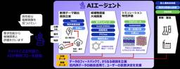

fltech - 富士通研究所の技術ブログ
https://blog.fltech.dev/
富士通研究所の研究員がさまざまなテーマで語る技術ブログ
フィード

Materials Informatics特集 #16：材料開発向けAIエージェントのご紹介
fltech - 富士通研究所の技術ブログ
こんにちは、富士通研究所 人工知能研究所の山﨑です。我々のプロジェクトでは、Materials Informatics (MI) の研究開発を行っており、材料技術に関するお客様の課題を解決することを目的として活動しております。 今回のMaterials Informatics特集では、私たちが開発している材料開発向けのAIエージェントについてご紹介します。材料計算に関するノウハウをAIエージェントのスキルとして整備することで、計算化学と計算機科学の専門知識がなくても材料計算を実行できるようにしたり、材料開発を加速することを目的としています。この記事では、全固体電池の負極／固体電解質界面を対象に…
5日前
GNext の紹介 #2 つながるデータから、 信頼できる知見へ ヘルスケア分野の事例紹介
fltech - 富士通研究所の技術ブログ
本稿では、GNextを**TuringDB**グラフデータベースと組み合わせることで、GNextが予測の先へどのように拡張されるかを説明します。TuringDBは、低レイテンシで、バージョン管理された分析クエリと可視化を実現します。
7日前

Frontria技術交流会#2「AI・偽情報時代のサプライチェーンリスクと対策の最前線」を開催しました
fltech - 富士通研究所の技術ブログ
はじめに こんにちは。セキュリティサイエンス研究所の長谷川です。 私たちは、当研究所が中心となって2025年に立ち上げた、偽情報をはじめとするAIリスクに取り組む国際コンソーシアム「Frontria」において、分野や組織を越えた共創の場として「Frontriaコミュニティ」の活動を推進しています。技術交流会で各業界の課題や技術への理解を深め、ハッカソンでアプリケーションとして形にし、その成果をFrontria全体の活動へと還元する——この循環を継続的に育てていくことを目指しています。 本記事では、その技術交流会の第2回として開催した、「AI・偽情報時代のサプライチェーンリスクと対策の最前線」の…
7日前

調達業務の自動化を支援する「帳票チェック支援AI」技術のご紹介
fltech - 富士通研究所の技術ブログ
こんにちは。人工知能研究所の陽奥、井谷、村田です。富士通では、見積書やインボイスなどの帳票を自動でチェックし、調達業務における人手による多重チェック作業を大幅に削減する「帳票チェック支援AI」を開発しました。今回は本技術の特徴と仕組みについて紹介します。
14日前
オーガナイズドセッション「偽情報対策技術」をWebDB夏のワークショップ2026で開催しました
fltech - 富士通研究所の技術ブログ
こんにちは、セキュリティサイエンス研究所の佐々木です。2026年9月15日（火）から17日（木）まで、大阪公立大学りんくうキャンパスで開催されたWebDB夏のワークショップ2026でオーガナイズドセッション「偽情報対策技術」を開催しましたので、その内容についてご紹介します。
19日前
そのAIモデル、本当に安全ですか？ オープンウェイトAIのサプライチェーンに潜む新たなリスク「BadEngram」
fltech - 富士通研究所の技術ブログ
私たちは、Fujitsu Research of EuropeのAIセキュリティ研究チームです。Pillar Securityとの共同研究を通じて、オープンウェイト言語モデルで採用が進む新しいコンポーネント「ゲート付きパラメトリックメモリ」に潜む、新たな攻撃面を発見しました。
20日前
プレスリリースから紐解く｜リサーチエバンジェリストによる富士通研究所TECH UPDATE✨（FY26-2Q＋α）
fltech - 富士通研究所の技術ブログ
富士通のテクノロジーのプレスリリースで研究所が対外的にお知らせしたホットトピックスを俯瞰し、要点をリサーチエバンジェリストの視点からお届け。 今回の内容は、量子のいろいろな話題、CPUの話題と、CEATEC予告です。
20日前
SICE FES 2026で研究成果を発表！～単眼RGBから「空間を理解する」3D Scene Graph生成技術～
fltech - 富士通研究所の技術ブログ
はじめに こんにちは、フィジカルAI研究所の鄭です。 2026年9月14日から17日にパシフィコ横浜で開催された「SICE Festival with Annual Conference 2026（SICE FES 2026）」に参加し、単眼RGB画像から3D Scene Graphを生成する研究成果をオーラル発表しました。本記事では、会場の様子、発表内容の概要、評価で得られた結果、さらに会場で印象に残った研究を紹介します。
1ヶ月前
OMAE 2026に参加しました ～AIを活用した海藻認識技術の発表～
fltech - 富士通研究所の技術ブログ
はじめに こんにちは、海洋デジタルツインコアプロジェクトの鈴木です。 2026年6月7日から12日に東京・お台場で開催された国際会議「The 45th International Conference on Ocean, Offshore and Arctic Engineering（OMAE 2026）」に参加し、海藻認識AIに関する研究「Sparse Point-Guided Fusion of Supervised and Self-Supervised Learning Model for Seaweed Segmentation」を発表しました。 本記事では、OMAE 2026の様子…
1ヶ月前
World Humanoid Robot Games 2026：ゼロから挑み、決勝進出へ
fltech - 富士通研究所の技術ブログ
こんにちは、富士通フィジカルAI研究所です。2026年8月、私たちのチームは第2回World Humanoid Robot Games（WHRG 2026）に参加しました。本ブログでは、私たちのシステムを支える主要技術と、競技を通じて得られた学びをご紹介します。WHRG 2026は、Physical AIチームにとって、ロボット技術の実社会への応用に向けた大きな第一歩となりました。
1ヶ月前
PIE-Ocean：海洋予測と海事デジタルツインのための高速AIエミュレータ
fltech - 富士通研究所の技術ブログ
こんにちは。私たちは、米国カリフォルニア州サンタクララにあるFujitsu Research of America（FRA）の Space Data Frontier Research Center（SDF-RC）に所属する Subhashis Hazarika、Rohit Vuppala、Nazanin Chaichitehrani、Anthony Wong です。今回は私たちが取り組んでいるPIE-X（Physics-Informed AI Emulators for different subsystems of nature - X's の略）についての研究成果をご紹介します。PIE-…
1ヶ月前
スケーラブル量子コンピューティングの実現に向けて：SnVセンターを含むダイヤモンドナノビームとAl₂O₃導波路の集積
fltech - 富士通研究所の技術ブログ
量子研究所 モジュラー量子コンピューティングコアプロジェクトのYangです。 本Tech Blogでは、スケーラブルな量子フォトニックチップの実現に向けて開発した、ダイヤモンド–Al₂O₃ハイブリッド構造に関する最近の研究成果をご紹介します。本構造では、スズ-空孔（SnV）センターを含むダイヤモンドナノビームをAl₂O₃導波路と集積することで、ダイヤモンド中の発光体からオンチップ光配線層への高効率な光結合を可能にします。以下では、デバイスのコンセプト、主要な作製技術、ならびにSnV発光の導波実証について説明します。本研究は、デルフト工科大学および東京大学との共同研究として実施しました。
1ヶ月前
強化学習によるマルチユーザーMIMOのスケジューリングについて、VTC2026-Fallで発表しました
fltech - 富士通研究所の技術ブログ
こんにちは、フィジカルAI研究所の森田です。 私たちのチームでは、無線通信の高効率化に向けて強化学習を活用したユーザースケジューリング技術の研究開発を行っています。今回、その成果を国際会議 IEEE 104th Vehicular Technology Conference（VTC2026-Fall）にて、”Reinforcement Learning-Based MU-MIMO Scheduling with a Single Policy for Varying UEs”というタイトルで発表する機会をいただきました。本記事では発表内容の概要をご紹介します。
2ヶ月前
RO-MAN 2026に2件採択！～人とロボットの協調を実現する技術～
fltech - 富士通研究所の技術ブログ
はじめに こんにちは、フィジカルAI研究所の山口と森山です。 私たちは2026年8月24日から28日に福岡県北九州市で開催された国際会議「The 35th IEEE International Conference on Robot and Human Interactive Communication (RO-MAN 2026)」に参加し、2件の研究成果を発表しました。本記事では、RO-MAN 2026の会場の様子、発表内容の概要、さらに会場で印象に残った研究を紹介します。
2ヶ月前
「手探り」するロボット：視覚と擬似力触覚を組み合わせた模倣学習
fltech - 富士通研究所の技術ブログ
はじめに こんにちは、フィジカルAI研究所の井出です。 近年、AIが現実の空間を認識し、ロボットとして行動する「フィジカルAI」への期待が高まっています。人の生活や産業の現場でロボットが活躍するには、物の位置を画像で認識するだけでなく、対象に触れたときの反発や負荷を捉え、動きを調整することが重要です。 私はロボット工学の博士号を取得し、「ロボティクス×AIセーフティ」の研究開発から事業化まで幅広く携わってきました。現在はSafety by Designを軸に、安全なAI・ロボットを実現するための研究開発に注力しています。 本記事では、安全なロボットマニピュレーションの実現に向け、視覚と力触覚を…
2ヶ月前
仮想空間でロボットが修行！？シミュレーションと実世界のギャップを埋めるSim-to-Real技術
fltech - 富士通研究所の技術ブログ
こんにちは、フィジカルAI研究所の苗村です。 フィジカルAI研究所では、AIを搭載して自ら考えて行動するロボット（フィジカルAI）の研究を、日本をはじめ、アメリカ、中国、インド、イギリスを含むグローバルなチームで進めています。 近頃、動画の中で、人型のロボットが陸上競技や家事をしたり、四足歩行のロボットが階段や斜面、でこぼこ道を軽快に歩く姿を目にした方も多いのではないでしょうか。 こうしたロボットに使用されるAIの訓練では、実機を何度も動かす代わりに、コンピューター上の仮想空間でのシミュレーションが広く使われています。しかし、シミュレーションの中で上手に歩けたからといって、そのAIを実機にその…
2ヶ月前
ICPR 2026に参加しました ～実環境 AI エージェントベンチマーク「FieldWorkArena」の発表～
fltech - 富士通研究所の技術ブログ
こんにちは、Physical AI研究所 Physical OS CPJの高橋です。 2026年8月17日から22日にフランス、リヨンで開催された国際会議「The 28th International Conference on Pattern Recognition (ICPR 2026)」に参加し、採録論文「FieldWorkArena: Agentic AI Benchmark for Real Field Work Tasks」を発表しました。 本記事では、ICPR 2026の会場の様子、FieldWorkArena の概要、さらに会議で特に印象に残った研究を紹介します。
2ヶ月前
MisD 2026で偽情報対策技術について発表しました
fltech - 富士通研究所の技術ブログ
こんにちは。富士通研究所 セキュリティサイエンス研究所の奥村です。 米国・ロサンゼルスで開催された国際会議「The 20th International AAAI Conference on Web and Social Media（ICWSM 2026）」に参加し、併設ワークショップ「The 2nd Workshop on Misinformation Detection in the Era of LLMs（MisD 2026）」で研究成果について発表を行いましたので、その内容についてご報告します。
2ヶ月前
流出した情報が世論操作の土台に！？ サイバー攻撃と影響工作の「つながり」を捉えるナレッジグラフ
fltech - 富士通研究所の技術ブログ
サイバー攻撃と影響操作が連動するハイブリッド脅威。本記事では、攻撃間の機能的関係を検索可能にし、一連の作戦として分析するナレッジグラフモデルを紹介します。
2ヶ月前
GNextの紹介：グラフAIアプリケーションのための共通基盤
fltech - 富士通研究所の技術ブログ
GNextは、複雑なマルチモーダルデータからグラフベースのAIアプリケーションを構築するための、再利用可能な基盤です。この最初のリリースでは、Fujitsu Research of EuropeのAI Labに所属するGraph AIチームが、GNextが共有のGraphIR表現を通じて、グラフの構築、学習、分析、説明可能性、プロビナンス（来歴）、およびコントリビューションのワークフローをどのように接続するかを紹介します。また、衛星インテリジェンス、個別化医療、金融詐欺検出における応用例も示しています。チームは、コントリビューターやアーリーアダプター（早期導入者）にGNextを試していただくよう呼びかけています。
3ヶ月前
NeurIPS 2026 にて "2nd Workshop on Agentic AI Benchmark and Application for Enterprise Tasks" の開催が決定しました 〜論文投稿募集のお知らせ〜
fltech - 富士通研究所の技術ブログ
こんにちは、富士通人工知能研究所の内田・佐藤・茂木です。 このたび、私たちがCarnegie Mellon University（CMU）・慶應義塾大学・ServiceNow Researchとともに提案していたワークショップが、機械学習分野のトップカンファレンスの一つである NeurIPS 2026（The Fortieth Annual Conference on Neural Information Processing Systems、2026年12月、オーストラリア・シドニー開催）の公式併設ワークショップとして採択されましたので、本記事にてお知らせします。あわせて論文投稿の募集も開始…
3ヶ月前
最新LLMのセキュリティ評価：富士通のLLM脆弱性スキャナーによるFable 5／GPT-5.6／Takaneの評価
fltech - 富士通研究所の技術ブログ
こんにちは、セキュリティサイエンス研究所のAI Agent Security Researchチームです。 本記事では、富士通のLLM脆弱性スキャナーを用いて、最新の大規模言語モデルであるFable 5、GPT-5.6、Takane *1のセキュリティを評価した結果を紹介します。今回の評価では、日本語版と英語版の両方のスキャナーでスキャンを実行しました。その結果、最新モデルでは攻撃耐性が全般的に強化されている一方、依然として脆弱性が残っており、継続的な評価と対策が必要であることを確認しました。 2026年8月6日更新： Takaneに富士通のLLMガードレールを組み合わせた場合の評価結果を追記…
3ヶ月前
ISC High Performance 2026に参加・展示しました #3 ～次世代Armベースプロセッサ「FUJITSU-MONAKA」の最新技術とHPC最新動向～
fltech - 富士通研究所の技術ブログ
はじめに こんにちは、富士通研究所 先端コンピューティング開発本部の式部剛広、竹内啓人、佐々木正人、秋元秀行、野口輝、柴田泰雅、竹谷凌です。私たちはAI・HPC・クラウドなどの最先端領域の未来を支える次世代Armベースプロセッサ「FUJITSU-MONAKA」をはじめとした「FUJITSU-MONAKA」シリーズの開発に取り組んでいます。また、2025年6月よりスーパーコンピュータ「富岳」の後継システムである「富岳NEXT」の開発を開始しました。これらの価値を世界に訴求すべく、2026年6月22日～6月26日にドイツのハンブルクで開催された国際会議ISC High Performance 20…
3ヶ月前
Frontriaコミュニティ始動！技術交流会#1「法律データは偽情報被害撲滅の夢を見るか」開催
fltech - 富士通研究所の技術ブログ
はじめに こんにちは。セキュリティサイエンス研究所の長谷川です。 生成AIの発展は、私たちにさまざまな恩恵をもたらす一方で、AI生成コンテンツを悪用した偽・誤情報の拡散など、社会全体に大きな影響を与える新たなリスクも生み出しています。こうした課題を、一つの組織だけで解決することは容易ではありません。
3ヶ月前
リサーチエバンジェリストによる富士通TECH UPDATE✨（FY26-1Qプレスより）
fltech - 富士通研究所の技術ブログ
こんにちは。富士通研究所の山田亜紀子です。 今年4月からFujitsu Research Evangelistとして活動開始しており、TechBlog初発信となります。よろしくどうぞ！！
3ヶ月前
ISC High Performance 2026に参加・展示しました #2 ～AI Computing BrokerとHPC・AIの最新動向
fltech - 富士通研究所の技術ブログ
はじめに こんにちは。人工知能研究所 AIコンピューティングCPJの林、長坂、生成AI CPJの白幡です。 2026年6月22日〜26日にドイツ・ハンブルクで開催された国際会議 ISC High Performance 2026（以下 ISC 2026）に、富士通ブースでの展示対応と情報収集のために現地参加しました。 今回、特に注目を集めた発表の一つが、GPUアクセラレータ全盛のなか、富岳と同じくGPUを搭載しない中国のスーパーコンピュータ「LineShine」がTOP500で世界1位となったことです。 本記事では、富士通ブースで展示したGPU効率化ミドルウェア「AI Computing Br…
3ヶ月前
生成AI 製造特化 -CAD自動検査の取り組みとその技術紹介-
fltech - 富士通研究所の技術ブログ
こんにちは。人工知能研究所の青木です。当研究所では 生成AI 特化技術開発を行っていて、私たちのチームでは製造業向けに CAD検査自動化技術の開発を行っています。先日、開発技術の一つである「CAD品番特定 AI」を法人向け PoC 環境 Fujitsu Kozuchi Research Version の一つとして公開しました。今回その紹介の機会をいただきましたので、合わせて CAD検査自動化についてお話ししようと思います。
4ヶ月前
超伝導量子ビットチップを運用するための技術の一例を紹介 ～ジョセフソン接合抵抗の経時変化を抑える低温保管技術～
fltech - 富士通研究所の技術ブログ
こんにちは。量子研究所の川野です。私は、超伝導量子コンピュータに用いる量子ビットチップの製造技術の研究開発を担当しています。今回は、量子ビットチップを運用するために開発した技術の一例を紹介したいと思います。（この記事の内容を、米国材料学会 Materials Research Society 春季大会（2025 MRS Spring Meeting）で発表しました[1]。）
4ヶ月前
光を使った量子ネットワークの高速化への第一歩！ ダイヤモンド中SnVセンターと光共振器のコヒーレントな結合に成功
fltech - 富士通研究所の技術ブログ
モジュラー量子コンピューティングコアプロジェクトでシニアプロジェクトディレクターをやっている河口です。この記事では、デルフト工科大学、QuTechの研究チームが私たち富士通との共同研究プロジェクト[1]において実現したダイヤモンドスピン量子技術の最新成果について解説していきます。なお、本成果は、量子分野の主要学術論文誌であるPhysical Review Xで2026年6月に発表され[2]、QuTechの公式サイトにてプレスリリースされています[3]。
4ヶ月前
ISC High Performance 2026に参加・展示しました #1 ～量子コンピュータ×HPC関連セッションを中心に
fltech - 富士通研究所の技術ブログ
はじめに こんにちは、量子研究所の五木田です。 2026年6月22日から26日まで、ドイツ・ハンブルクで開催された国際会議 ISC High Performance 2026（以下、ISC 2026）に参加しましたので、その内容をご紹介します。本記事では、特に量子コンピュータをHPC環境に統合するためのプラットフォーム関連のセッションを中心にレポートします。
4ヶ月前